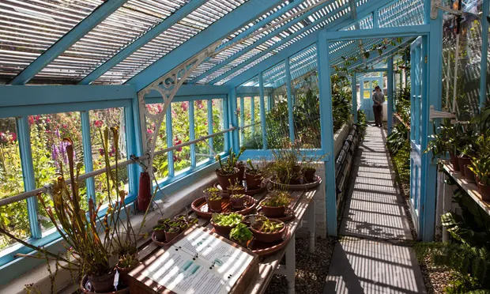
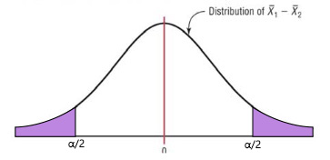
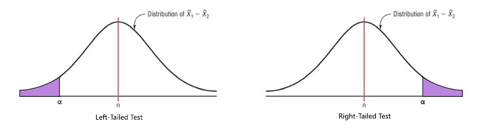

source("Lab_06_tests.r")
dat = read.csv("../datasets/Lab_06_darwin.csv")GEOG 374: \(t\)-test - Determining Differences in Growth Between Cross-Pollinated and Self-Fertilized Plants
- Authors: Hewitt Lab (Micheal Jerowsky and Nina Hewitt) \(\times\) COMET Team (Charlotte White, and Jonathan Graves)
- Last Update: 9 September 2023
This module has a suggested citation of:
Jerowsky, M., Hewitt, N., 2023. Interactive Notebooks for Statistics and Computation in Geography: Determining Differences in Growth Between Cross-Pollinated and Self-Fertilized Plants. In Adshade et al. 2023. The COMET Project: Creating Online Materials for Econometrics Teaching. https://comet.arts.ubc.ca/.
Outline
Prerequisites
- Introduction to Jupyter
- Introduction to R
- Introduction to Data
Outcomes
After completing this notebook, you will be able to: * Explore data to gain a better understanding of its content and structure. * Visualize data using a histogram and boxplot. * Conduct a t-test in R. * Conduct a Mann-Whitney-Wilcoxon test in R.
References
Introduction
When many of us think of Charles Darwin, we think of his voyages to the Galapagos Islands and The Origin of Species which describes his theory of evolution and natural selection. However, few realize that after he returned from his voyage aboard the HMS Beagle, he would never leave Britain again due to ailing health. Rather, the gardens at Darwin House in the Kentish countryside would become a laboratory for him. He would grow all sorts of exotic specimens that were sent to him by botanists from around the world.

In this lab, you will conduct a t-test to analyze an experiment conducted by Charles Darwin in which he sought to determine if there was a difference between the growth of cross-pollinated plants and self-fertilized plants. In cross-pollinated plants, the pollen and ovule are from different individuals, whereas in self-fertilized plants, the pollen and ovule are from the same individual. He postulated that cross-pollinated plants would produce fitter offspring when compared to self-fertilized plants. In order to test this, Darwin raised pairs of plants (one self-fertilized and one cross-pollinated) in the same pot, and then measured differences in their heights.
Data
We will use the dataset collected by Charles Darwin in his treatise on the cross and self-fertilization of plants, documenting the height of 15 pairs.
To begin, let’s import our data and save it as a variable called dat.
This data contains values for: * Fertilization: Treatment condition 1 refers to cross-pollination, and treatment condition 2 refers to self-fertilization.
Plant: The specific plant pairing.
Height: The height of the plant in cm.
Part 1: Key Concepts
Two Sample T-tests
A two sample t-test is a form of hypothesis test that is used to determine if two groups are significantly different from each other by comparing the means of those groups. However, there are some basic assumptions that must be fulfilled before using this hypothesis test: * The populations from which the sample groups are taken are assumed to be normal. * Samples are randomly selected and independent. * The samples are assumed to have equal standard deviations (or variances). If this is not the case, we can conduct a t-test for unequal variances (Welch’s t-test).
Example: An education researcher would like to compare the knowledge gains from students’ environmental education in two different grade 6 classes that use different approaches to teaching. One class takes students on a field trip to a local park, while the second class goes on a virtual field trip of the same park. The dependent variable is the grade students receive on a knowledge test at the end of the field trip, and the independent variable is the type of field trip they participated in. As the researcher is comparing the means of these two different groups, they will use a two sample t-test.
When conducting a t-test, a researcher is interested in determining if the test statistic exceeds the critical values of the test. The null hypothesis for such a test can be written as follows: \(Ho: \mu_1 - \mu_2 = 0\)
However, the alternate hypothesis for such a test will depend on whether it is a two-tailed or one-tailed test.
A two-tailed test simply looks to see if there is a difference between the means at all. Looking at the distribution of sample differences, we would seek to see if our computed test statistic lay past the critical value at either end of the distribution. In such a case, the critical value would be associated with an \(\alpha/2\):

A one-tailed test looks to see if there is a difference between means at one end of the distribution. This would be used if the question being asked assumed that the mean of one sample was higher or lower than the other. We would look to see if our computed test statistic lay past the critical value at one end of the distribution. In such a case, the critical value would be associated with the full \(\alpha\) value.

The alternate hypothesis can be written as follows depending on the type of test being conducted:
- Two-tailed Test: $Ha: _1 - _2 $
- Left-tailed Test: $Ha: _1 - _2 < 0 $
- Right-tailed Test: $Ha: _1 - _2 > 0 $
If our computed t-statistic is within the critical region for our test, then we have found a statistically significant result. We can reject our null hypothesis, and the two groups are different from one another based on our chosen alpha level. In the case of conducting a t-test in r, if the p-value is below an assumed \(\alpha\), we can also reject our null hypothesis.
In r, the function for t-test is t.test(y~x,data=dataset, var.equal=TRUE) where * y= numeric variable * x= treatment group * datasetshould be replaced with the name of the variable storing your data. * You can use the var.equal = TRUE option to specify equal variances and a pooled variance estimate, or remove it if you believe variances to be unequal. * You can use the alternative="less" or alternative="greater" option to specify a one tailed test if desired.
Mann-Whitney-Wilcoxon Test
A t-test, however, is not appropriate in every case. T-tests are based on assumptions about the larger population that the samples have been drawn from. In this way, t-tests are parametric tests. As specified above, our dataset must therefore fulfill a number of basic assumptions in order for us to conduct a t-test. But what can be done if our dataset does not meet all of these assumptions?
The Mann-Whitney-Wilcoxon test is a nonparametric statistical test used to compare two independent samples of ordinal or continuous data. It assesses whether there is a significant difference between the medians of the two groups by ranking all the observations in the combined sample and then comparing the sum of ranks for each group. It is an alternative to the two-sample t-test when normality and equal variances assumptions are violated, or when the sample size is small.
It is important to note that the Mann-Whitney-Wilcoxon test only tests for a difference in the median values of the two groups. Additionally, it assumes that the two samples are independent and randomly sampled.
Part 2: Lab Exercises
Exercise 1: Data Exploration and Visualization
First we will explore the data collected by Darwin to ensure that it meets the prerequisites for a t-test.
A) Investigate the dataframe using head and tail to view its structure, headings, and the total number of records. Then look at the overall structure of your data.
head(dat) # look at the first few entries
tail(dat) # look at the last few entries
str(dat) # look at the overall structureB) Next, create two variables (Fertil.1 and Fertil.2) to hold the observations for cross-pollinated and self-fertilized plants.
Fertil.1 = dat$height_cm[dat$Fertil==1]
Fertil.2 = dat$height_cm[dat$Fertil==2]Question 1: How many records are in this dataset?
answer_1 <- # your answer here
test_1()C) Create histograms for each treatment group to visualize the distribution of plant height. You will need to create classes to visualize your data by using the seq() function, storing this as a variable called bins. Make sure to label your histograms.
bins = seq(30, 60, 6) # create classes for your histograms
par(mfrow=c(1,2)) # create a matrix of plots to hold two plots in the same output
hist(Fertil.1, # create a histogram for treatment group 1
breaks=bins, # reference your class breaks
xlab = "Plant Height (cm)", # title your x axis
main="", # give your histogram a descriptive title
col = "light green") # color your histogram
hist(Fertil.2, # create a histogram for treatment group 2
breaks=bins, # reference your class breaks
xlab = "Plant Height (cm)", # title your x axis
main="", # create a histogram for treatment group 2
col = "purple") # color your histogram D) Use the fivenum function to calculate quartiles for Fertil.1 and Fertil.2 that will help you describe your data.
fivenum(Fertil.1)
fivenum(Fertil.2)Question 2: What is the range of the self-fertilized group? Please include 2 decimal places in your answer.
answer_2 <- # your answer here
test_2()Question 3: What is the median value for the cross-pollinated group?
answer_3 <- # your answer here
test_3()E) Another way to visualize and inspect your data is to create a box plot. Use the boxplot() function to create a boxplot of each group for comparison. Be sure to add a title to your visual!
boxplot(dat$height_cm ~ dat$Fertil, #create boxplots
xlab="Plant Height (cm)", # label your x-axis
ylab="Fertilization Method", # label your y-axis
main="", # give visual a title
col=c("light green","purple"), # color your boxplots
range = 0, # a rang of 0 extends whiskers to the extremes of your data
horizontal=TRUE) # create a horizontal box plot. The default is vertical.Question 4: Based on the boxplots, what is the approximate interquartile range of treatment group 2? (‘A’, ‘B’, ‘C’, or ‘D’)
32-52
41-47
50-56
35-60
answer_4 <- '' # your answer here ('A', 'B', 'C', or 'D')
test_4()F) While box plots are good for visualizing basic distributions and comparing summary statistics, they do not let us see variations in the data very well. The violin plot is a hybrid of a box plot and a kernel density plot, which allows us to see peaks in the data and visualize its distribution. Use the code below to create violin plots for the two different fertilization methods.
dat$Fertil <- as.factor(dat$Fertil) # Change the fetilization method variable to a factor which is used for categorical data
vp <- ggplot(dat, aes(x=Fertil, y=height_cm, fill=Fertil)) + # Create a variable 'vp' to hold the violin plot and assign your x and y axis
geom_violin(trim=FALSE) + # set the trim argument to FALSE to prevent the ends of your distribution from being cut off
scale_fill_manual(values=c("light green", "purple")) + # set the colors of the violin plots
geom_boxplot(width=0.1, fill="white") + # style the box plot
labs(title="Plant height by breeding method",x="Fertilization method", y = "Height (cm)") # title your plot and axis.
vp + coord_flip() # Flip the violin plots so they are displayed horizontallyQuestion 5: Are the data normally distributed? (‘yes’ or ‘no’)
answer_5 <- '' # your answer here ('yes' or 'no')
test_5()F) Let’s attempt to transform the data to see if it will become normally distributed after logging it. We will use the mutate() function to create a new column in our data and populate it by logging the heights of both groups.
dat = read.csv("../datasets/Lab_06_darwin.csv") %>% # we are reading in our data again and using a piping operator '%>%' to then use the mutate function on it.
mutate(height_log=log(height_cm)) # mutate creates a new column called height_log and this is equal to the log of each heigh_cm record.G) Create another violin plot with the logged height data to check if it is normally distributed.
dat$Fertil <- as.factor(dat$Fertil) # Change the fetilization method variable to a factor which is used for categorical data
vp2 <- ggplot(dat, aes(x=Fertil, y=height_log, fill=Fertil)) + # Create a variable 'vp' to hold the violin plot and assign your x and y axis
geom_violin(trim=FALSE) + # set the trim argument to FALSE to prevent the ends of your distribution from being cut off
scale_fill_manual(values=c("light green", "purple")) + # set the colors of the violin plots
geom_boxplot(width=0.1, fill="white") + # style the box plot
labs(title="Plant height by breeding method",x="Fertilization method", y = "Height (cm)") # title your plot and axis.
vp2 + coord_flip() # Flip the violin plots so they are displayed horizontallyQuestion 6: Are the data normally distributed? (‘yes’ or ‘no’)
answer_6 <- '' # your answer here ('yes' or 'no')
test_6()Exercise 2: Two-Sample T-test and Mann-Whitney-Wilcoxon Test
Now we will investigate whether the heights of cross-pollinated and self-fertilized plants are significantly different.
Question 7: Is a t-test appropriate to determine if there is a significant difference in this case?
answer_7 <- '' # your answer here ('yes' or 'no')
test_7()Question 8: Explain your answer to question 7.
Write your answer here
A) For questions 9-12, assume that the data had been normally distributed.
Question 9: You have been asked to determine if there is a difference in height between the two fertilization methods. Would you use a one or two-tailed t-test to determine this?
One-tailed
Two-tailed
answer_9 <- '' # your answer here ('A' or 'B')
test_9()Question 10: What is your null hypothesis? (‘A’, ‘B’, ‘C’, or ‘D’)
\(Ho: \mu_1 - \mu_2 \neq 0\)
\(H_0: \mu = 0\)
\(H_0: \mu_2 - \mu_1 > 0\)
\(Ho: \mu_1 - \mu_2 = 0\)
answer_10 <- '' # your answer here ('A', 'B', 'C', or 'D')
test_10()Question 11: What is your alternative hypothesis? (‘A’, ‘B’, ‘C’, or ‘D’)
$Ha: _1 - _2 > 0 $
$Ha: _1 - _2 < 0 $
$Ha: _1 - _2 $
\(Ho: \mu_1 - \mu_2 = 0\)
answer_11 <- '' # your answer here ('A', 'B', 'C', or 'D')
test_11()B) Conduct a two sample t-test using the t.test() function.
t.test(height_log ~ Fertil, data = dat)Question 12: Can you reject your null hypothesis? (‘yes’ or ‘no’)
answer_12 <- '' # your answer here ('yes' or 'no')
test_12()C) As the data was not actually normally distributed, the appropriate response would have been to run a non-parametric test as opposed to a t-test. In this case, we will run a Mann-Whitney-Wilcoxon Test. As this test is for non-normal data, we will not use the logged heights in our test.
wilcox.test(height_cm ~ Fertil, data=dat, exact=FALSE) Question 13: In 2-3 sentences, summarize your findings with regard to fertilization method. Be sure to state your p-value, alpha value, and explain what this means based on the background information provided for this lab.
Write your answer here
Question 14: As a researcher, what could you do to improve the chances that your data were normally distributed?
Write your answer here